머물멍을 설치하고 실행하는 방법과 화면 사용법을 정리한 문서다. Docker 명령 한 줄이면 인터넷과 API 키 없이도
같은 화면과 같은 답을 재현할 수 있다. 실데이터·Claude·네이버 지도는 필요할 때 환경변수로 켠다.
어디서 막힐 수 있는지와 지금의 제약도 함께 밝힌다.
5장 · 저장소 맨 위의 .env.example, API 키 발급·설정 방법(5.3절), 평가용 키(부록)
사용자 매뉴얼
6장 (화면 순서대로, 화면 사진 18장)
오류 · 제약사항
7장
작성 2026-11-19 · 저장소 main 브랜치 기준
화면 사진은 2026-11-19 시연 서버(데이터: 제주데이터허브 실데이터, AI 설명: Claude Opus 5.5)에서 찍었다.
출처: 제주특별자치도, 제주데이터허브 · 제주빅데이터센터 제공 자료 포함
1개요
1.1 머물멍이 하는 일
제주 43개 읍면동 가운데 하나를 고르면 청년이 머무는지 → 빈자리를 누가 채우는지 → 그 사람들을 어떻게 오게 할지를
차례로 진단하고, 근거표·SQL·한계가 붙은 최종 제안서까지 만든다. 숫자는 SQL이, 제안 후보는 설정 파일의 규칙이 만들고,
AI(Claude)는 질문 해석과 쉬운 설명만 맡는다. AI가 쓴 문장은 자동 검증을 통과해야 화면에 나온다.
단계
답하는 질문
내놓는 것
1단계 청년이 머무는 동네
어디서 청년이 빠지고, 어디는 버티는가
읍면동 활력 유형(A~D·유지), 비슷한 읍면 3곳, 추천 순위
2단계 빈자리를 누가 채우나
빈자리를 채우는 소비는 어디에, 언제, 무엇에 오는가
타깃 관광객, 테마·요일·국적 분석, 규칙이 만든 제안 후보
3단계 어떻게 오게 하나
항공편이 줄면 수요는 어떻게 변하고, 어떤 노선으로 오는가
수요 시나리오, 관광에 민감한 노선, 거점에서 오는 코스
1.2 실행 방법 세 가지
방법
이럴 때
필요한 것
여는 주소
① Docker (권장)
심사·시연, 처음 써 볼 때
Docker Engine, Docker Compose 2.24 이상
http://localhost:3000
② 직접 실행
개발, Docker를 쓰지 않을 때
Python 3.11 이상, PostgreSQL, Node 20.19 이상(화면 빌드)
http://127.0.0.1:8501
③ 센터 PC
인터넷이 없는 제주빅데이터센터 분석실
Python 3.11, PostgreSQL, 미리 빌드한 화면(frontend/dist)
http://127.0.0.1:8501
1.3 동작 모드
구분
모드
내용
데이터
샘플 데이터 (synthetic, 기본)
시드를 고정한 합성 데이터. 처음 실행할 때 자동으로 만들어져 누구나 같은 값을 재현한다. 화면에 "샘플 데이터" 배지가 붙는다.
실데이터 (hub)
제주데이터허브 Open API·파일로 받은 자료. 각자 허브 프로젝트 키로 받아 적재한다 (3.4절).
센터 데이터 (center)
제주빅데이터센터 추출본. 센터 PC 안에서만 쓴다. 센터 자료가 없는 표는 허브 자료로 채운다.
AI 설명
기본 (template, 기본)
규칙이 만든 문장으로 설명한다. 밖으로 보내는 것이 없고, 같은 질문에 항상 같은 답을 낸다. 인터넷이 없는 센터 PC에서도 돈다.
Claude (anthropic, 선택)
Claude Opus 5.5가 질문 해석과 쉬운 설명을 맡는다. 동네별 집계 지표만 보내며, 보낼 내용을 미리 보여 주고 동의를 받은 뒤에만 보낸다.
1.4 저장소 구성
.
├─ backend/ 에이전트 코어와 웹 API (Python · FastAPI · PostgreSQL)
│ ├─ config/ settings.yaml(분석 기준값) · playbook.yaml(제안 규칙 12개) · catalog/*.yaml(테이블 설명 8장)
│ ├─ data/ref/ 참조표 CSV (읍면동 43곳, 지구, 테마, 거점, 노선, 방문목적, 국적)
│ ├─ meomulmeong/ 에이전트(해석·계획·검증·해설), 도구(SQL), 데이터 적재, 웹 API, 제안서
│ │ └─ agent/prompts/ Claude에 주는 프롬프트 4종 (질문 해석 · 설명 · 자유 질문 설명 · SQL 작성)
│ ├─ eval/ 골든셋 60문항과 기대값 계산
│ └─ tests/ 자동 테스트 274개
├─ frontend/ 웹 화면 (React · TypeScript, 테스트 84개)
├─ docs/ 기획서 · 대회 안내문 · 검수 리포트 · 제출 문서(이 문서)
├─ Dockerfile · docker-compose.yml · docker-compose.shared.yml
└─ .env.example 환경변수 예시 (복사해서 .env 로 씀)
원자료(허브 수집본·센터 추출본), 그 CSV 내보내기, API 키가 든 .env는 저장소에 넣지 않는다.
README는 세 개다. 저장소 README.md는 전체 요약, backend/README.md는 구조·도구·안전장치·웹 API·평가,
frontend/README.md는 화면 구성과 차트·지도 기준을 다룬다.
2실행 환경
2.1 소프트웨어
항목
버전
비고
운영체제
Linux · Windows 10/11 · macOS
Docker 또는 Python이 도는 환경. 시연 서버는 Ubuntu 24.04
Docker
Engine 24 이상, Compose 2.24 이상
①번 방법. env_file의 required: false 문법 때문에 Compose 2.24 이상이 필요하다
Python
3.11 이상
②·③번 방법. 실행 이미지는 Python 3.11.18
Node.js
20.19 이상
화면을 빌드할 때만 필요하다. 빌드한 frontend/dist만 있으면 실행 PC에는 Node가 없어도 된다
PostgreSQL
17 (시험한 버전)
데이터 창고. Docker로 띄우면 postgres:17-alpine을 쓴다
웹 브라우저
최신 Chrome · Edge
화면은 글꼴·아이콘을 빌드 결과물에 담아 CDN 없이 열린다
2.2 하드웨어
항목
권장
잰 값 (2026-11-19, 시연 서버)
CPU
2코어 이상
분석은 SQL 집계라 답 하나가 0.1~0.3초 (AI 설명 없이)
메모리
4GB 이상
앱 컨테이너 약 150MB
디스크
여유 3GB 이상
앱 이미지 513MB, 데이터 창고 153MB (샘플 + 실데이터)
GPU
필요 없음
로컬 LLM을 쓰지 않는다. 센터 PC 최소사양(i7-8700 · GTX 1060 · RAM 32GB)으로 충분하다
2.3 네트워크와 포트
무엇
인터넷
비고
기본 모드 (샘플 · 기본 설명)
필요 없음
외부로 나가는 요청이 0건이다
Claude 설명
필요 (Anthropic API)
선택 기능. 키가 없거나 연결이 안 되면 기본 설명으로 자동 전환
네이버 지도
필요 (NAVER Cloud Maps)
선택 기능. 안 되면 내장 지도(점 지도)로 자동 전환
실데이터 수집
필요 (제주데이터허브)
자료를 받을 때만. 분석할 때는 외부 호출이 없다
포트
쓰는 곳
127.0.0.1:3000
Docker로 띄운 화면·API. 로그인 기능이 없어서 이 PC 안에서만 연다
127.0.0.1:8501
직접 실행한 화면·API (serve). --host 0.0.0.0은 믿을 수 있는 망에서만 쓴다
127.0.0.1:5434
Docker로 띄운 데이터 창고(PostgreSQL)
localhost:5173
화면 개발 서버 (npm run dev)
3설치 · 실행 절차
3.1 소스 받기
제출한 ZIP을 풀거나 GitHub 저장소를 git clone 한다. 아래 명령은 모두 저장소 맨 위 폴더에서 시작한다.
3.2 ① Docker로 한 번에 실행 (권장)
cp .env.example .env # 선택. 키를 넣지 않아도 기본 모드(샘플 데이터 · 기본 설명)로 돈다
docker compose up -d --build # 처음에는 이미지를 만들고 샘플 데이터를 넣는다 (3~4분)# 브라우저에서 http://localhost:3000 을 연다
docker compose logs -f app # 로그 보기
docker compose down # 내리기 (데이터 · 제안서 · 실행 기록은 볼륨에 남는다)
컨테이너 두 개가 뜬다. 화면과 API를 맡는 앱(jeju-meomulmeong-app)과 데이터 창고 PostgreSQL(jeju-meomulmeong-db)이다.
앱이 처음 뜰 때 샘플 데이터 창고가 없으면 합성 데이터를 만들어 넣는다 (약 25초). 다음부터는 바로 뜬다.
앱은 30초마다 /api/health로 상태를 확인한다. docker ps에 healthy가 보이면 준비된 것이다.
3.3 ② 직접 실행 (Docker 없이)
docker compose up -d db # 데이터 창고만 Docker로 띄우거나, 설치된 PostgreSQL 을 쓴다 (.env 의 MEOMUL_PG_*)
cd backend
python -m venv .venv
.venv/bin/python -m pip install -r requirements.lock # 버전 고정본
.venv/bin/python -m pip install -e . --no-deps
.venv/bin/python -m meomulmeong build-data # 샘플 데이터를 만들어 PostgreSQL 에 넣는다 (약 25초)
cd ../frontend && npm ci && npm run build # 화면 빌드 → frontend/dist
cd ../backend && .venv/bin/python -m meomulmeong serve --open # http://127.0.0.1:8501
Windows에서는 .venv/bin/python 대신 .venv\Scripts\python을 쓴다. uv가 있으면
uv venv --python 3.11 .venv → uv pip install --python .venv/bin/python -r requirements-dev.txt -e .로 설치해도 된다.
따로 설치한 PostgreSQL을 쓸 때는 데이터베이스와 사용자를 미리 만들고, 그 사용자에게 스키마를 만들 권한을 준다.
3.4 실데이터(제주데이터허브) 넣기
허브 자료는 재배포할 수 없어서 저장소에 없다. 각자 허브 프로젝트 키(발급 방법은 5.3절)로 받아 같은 데이터 창고에 넣는다.
# 0) .env 에 MEOMUL_HUB_PROJECT_KEY 를 넣는다 (허브 마이페이지 > 프로젝트, 데이터마다 '프로젝트 담기' 필요)
cd backend
# 1) 월 단위 4종은 전 기간을 한 번에
.venv/bin/python -m meomulmeong fetch-hub --table arrivals_purpose_monthly --table foreign_visitors_monthly \
--table card_zone_dow_monthly --table spend_tour_type_monthly
# 2) 일 단위 유동인구는 비교할 24개월을 달마다 나흘만 (하루 쿼터 1,000건 절약)
.venv/bin/python -m meomulmeong fetch-hub --table pop_kor_emd_daily --table pop_for_long_emd_daily \
--start 20240901 --end 20260831 --days 1,9,17,25
# 3) 버스는 입도객 자료와 겹치는 12개월을 달마다 이틀만
.venv/bin/python -m meomulmeong fetch-hub --table bus_route_daily --start 20240801 --end 20250731 --days 9,25
# 4) 파일 자료: 허브의 '업종별 성별 카드 이용 정보'(1048)를 내려받아 backend/data/hub/card_biz/ 에 둔다# 5) 적재 (새 스키마를 다 만든 뒤 한 번에 바꿔치기해서, 적재 중에도 기존 데이터로 답한다)
.venv/bin/python -m meomulmeong build-data --mode hub
적재 후 .env의 MEOMUL_DATA_MODE=hub로 띄우거나, 화면 왼쪽의 데이터 선택에서 "실데이터"를 고른다.
Docker만 쓰는 PC에서는 컨테이너로 적재한다: docker compose run --rm -v ./backend/data/hub:/app/backend/data/hub:ro app build-data --mode hub
다른 PC로 옮길 때는 export-csv --mode hub로 내보낸 data/export/hub/ 폴더를 같은 자리에 복사하고 build-data --mode hub를 실행한다. 허브를 다시 부르지 않아도 된다.
허브 프록시는 요청이 자주 실패(502)해서 수집기가 한 쪽에 10번까지 다시 보낸다. 하루 쿼터가 차면 멈추고 다음 날 이어 받으라고 알려 준다. 받은 쪽은 남겨 두고 없는 쪽부터 이어 받는다.
3.5 Claude 설명 켜기 (선택)
# .env
MEOMUL_LLM_MODE=anthropic
ANTHROPIC_API_KEY=sk-ant-... # 본인 키 또는 부록의 평가용 키 (발급 방법은 5.3절). 저장소에 올리지 않는다# 다시 띄운다: docker compose up -d 또는 serve 재실행
화면에서는 답마다 "전송 미리보기"로 보낼 내용(동네별 집계 지표)을 먼저 보여 주고, 동의를 누른 세션만 Claude에 보낸다.
명령줄에서는 --llm anthropic --yes-cloud를 붙인다. 키가 없거나 인증·연결에 실패하면 기본 설명으로 자동 전환하고 그 이유를 상태에 적는다.
3.6 네이버 지도 켜기 (선택)
NAVER Cloud Platform 콘솔에서 Maps Application을 만들고 Dynamic Map, Geocoding, Reverse Geocoding, Directions 5, Static Map을 켠 뒤(5.3절),
.env에 NAVER_CLOUD_PLATFORM_CLIENT_ID와 NAVER_CLOUD_PLATFORM_CLIENT_SECRET을 넣는다.
Dynamic Map은 콘솔의 Web 서비스 URL에 등록한 주소에서만 열린다. Secret은 서버에서만 쓰고 화면으로 보내지 않는다.
키가 없거나 지도를 불러오지 못하면 화면은 내장 지도로, 제안서는 SVG 지도로 그린다.
3.7 여러 사람이 함께 쓰는 배포 (선택)
로그인 없이 여러 사람이 같은 주소로 쓰는 시연 서버는 MEOMUL_LOCK_MODES=true(데이터·AI 모드 고정, 모드 전환 API 403),
MEOMUL_API_DOCS=false(/docs·/openapi.json 닫기)로 띄운다. 모드는 서버 전체에 걸리기 때문이다.
공용 게이트웨이와 공용 PostgreSQL에 붙이는 설정은 docker-compose.shared.yml에 있다.
3.8 ③ 센터 PC (인터넷 없는 분석실)
인터넷이 되는 PC에서 frontend를 빌드하고 frontend/dist 폴더를 옮긴다. 센터 PC에는 Node가 필요 없다.
Python 3.11과 requirements.lock의 패키지를 설치한다. 인터넷이 없으면 다른 PC에서 받은 wheel 파일로 설치한다.
센터 PC의 PostgreSQL에 데이터베이스와 사용자를 만들고 .env의 MEOMUL_PG_*에 접속 정보를 넣는다.
센터용 설치 스크립트(install.bat·run.bat)와 오프라인 설치 꾸러미는 아직 없다 (7.2절).
3.9 잘 떴는지 확인
curl http://localhost:3000/api/health # {"ok":true,"ready":true,"message":null}
cd backend && .venv/bin/python -m meomulmeong status # 데이터 모드, AI 설명, 표마다 행 수와 수록 기간
.venv/bin/python -m meomulmeong ask "성산읍 청년 인구 왜 줄었어?"
.venv/bin/python -m pytest -q # 백엔드 테스트 274개 (PostgreSQL 이 떠 있어야 한다)
.venv/bin/python -m eval # 골든셋 60문항
cd ../frontend && npm test # 화면 테스트 84개
4의존성 목록
백엔드는 backend/requirements.lock에 36개 패키지의 버전을 모두 고정했고(실행 이미지가 이 파일로 설치한다),
화면은 frontend/package-lock.json으로 고정했다. 아래는 직접 쓰는 라이브러리다.
4.1 백엔드 (Python)
패키지
버전
라이선스
쓰는 곳
psycopg[binary]
3.3.9
LGPL-3.0
PostgreSQL 연결 (적재·읽기 전용 조회)
pandas
3.1.1
BSD-3-Clause
원본 읽기·적재, 골든셋 기대값 계산
numpy
2.4.6
BSD-3-Clause
수치 계산, 노선 민감도 회귀
pyarrow
26.0.1
Apache-2.0
수집본 Parquet 저장·읽기
pydantic
2.14.3
MIT
답(Answer)·질문 해석·도구 결과의 데이터 모델
pydantic-settings
2.16.2
MIT
환경변수(.env) 읽기
PyYAML
6.0.3
MIT
설정·제안 규칙·테이블 설명 파일
Jinja2
3.1.6
BSD-3-Clause
최종 제안서 HTML
httpx
0.28.1
BSD-3-Clause
제주데이터허브 · 네이버 지도 API 호출
FastAPI
0.162.5
MIT
웹 API (REST · 진행 상황 SSE)
Uvicorn
0.54.0
BSD-3-Clause
웹 서버
anthropic (선택)
2.8.0
MIT
Claude 호출 (구조화 출력)
pytest · ruff (개발)
8 · 0.6 이상
MIT
테스트, 코드 검사
4.2 화면 (Node · React)
패키지
버전
라이선스
쓰는 곳
react · react-dom
19.3.1
MIT
화면
lucide-react
1.72.0
ISC
아이콘 (빌드 결과물에 포함)
pretendard
1.3.9
OFL-1.1
글꼴 (빌드 결과물에 포함, CDN 없음)
vite · @vitejs/plugin-react
8.3.8 · 6.3.0
MIT
빌드 · 개발 서버
typescript
7.0.2
Apache-2.0
타입 검사
vitest · Testing Library · jsdom
4.1.12 · 16.3.3 · 29.1.1
MIT
화면 테스트
oxlint
1.93.0
MIT
코드 검사
openapi-typescript
7.13.0
MIT
백엔드 API 명세에서 화면 타입 만들기 (개발할 때만)
차트와 지도는 라이브러리 없이 SVG로 직접 그린다.
4.3 실행 이미지 · 서비스
이미지
쓰는 곳
python:3.11-slim
앱 실행 이미지 (jeju-meomulmeong:0.1.0, 약 513MB, 루트가 아닌 meomul 사용자로 실행)
환경변수는 저장소 맨 위의 .env 하나에 둔다. 백엔드(명령줄·웹 API)와 docker compose가 같은 파일을 읽는다.
.env.example을 같은 자리에 .env로 복사해 채우고, 값을 비워 둔 항목은 기본값을 쓴다.
.env는 git과 Docker 이미지에 들어가지 않는다 (.gitignore, .dockerignore).
5.1 .env 예시
# 머물멍 환경변수 예시 — 이 파일을 같은 자리(저장소 맨 위)에 .env 로 복사해 값을 채우세요.# 서버의 공용 nginx 게이트웨이·공용 PostgreSQL 에 붙일 때만 주석을 풀어요 (docker-compose.shared.yml 참고)# COMPOSE_FILE=docker-compose.yml:docker-compose.shared.yml
MEOMUL_DATA_MODE=synthetic # synthetic(샘플) | hub(허브 수집본) | center(센터 추출본)
MEOMUL_LLM_MODE=template # template(LLM 없음, 기본) | anthropic(클라우드 Claude, 선택)
MEOMUL_ANTHROPIC_MODEL=claude-opus-5-5
ANTHROPIC_API_KEY=
# 데이터 창고 (PostgreSQL). 비우면 docker-compose.yml 의 db 서비스 기본값 (127.0.0.1:5434, meomul)
MEOMUL_PG_HOST=
MEOMUL_PG_PORT=
MEOMUL_PG_DB=
MEOMUL_PG_USER=
MEOMUL_PG_PASSWORD= # docker compose 의 db 서비스 암호로도 쓰인다. 비우면 meomul
MEOMUL_API_HOST=127.0.0.1
MEOMUL_API_PORT=8501
MEOMUL_CORS_ORIGINS=
MEOMUL_WEB_DIST=
MEOMUL_LOCK_MODES= # 여러 사람이 같은 주소로 쓰는 배포본: true
MEOMUL_API_DOCS= # 공개 주소에 둘 때: false
NAVER_CLOUD_PLATFORM_CLIENT_ID= # 네이버 클라우드 Maps (선택)
NAVER_CLOUD_PLATFORM_CLIENT_SECRET=
MEOMUL_NAVER_MAPS= # 인터넷이 없는 센터 PC: false
MEOMUL_HUB_PROJECT_KEY= # 제주데이터허브 Open API 프로젝트 키 (수집할 때만)
.env에 두 값을 넣고 다시 띄운다. Secret은 서버에서만 쓴다. 키가 없거나 막히면 내장 지도로 자동 전환
제출물과 키 — 허브 키와 네이버 키는 제출물에 넣지 않는다. 대회 규칙에 따라 외부 AI API(Claude)의 평가용 키만
심사위원에게 내는 최종 결과물 ZIP의 이 문서 부록에 적을 수 있고, 사용 한도를 걸어 두며 평가 기간이 끝나면 삭제한다.
공개 저장소에 있는 이 문서에는 평가용 키를 적지 않는다.
6사용자 매뉴얼
화면 순서대로 설명한다. 사진은 표선면을 예로 실데이터와 Claude 설명으로 실행한 화면이다.
6.1 첫 화면
그림 1. 첫 화면. 왼쪽 메뉴에는 데이터 모드·AI 설명·단계·최종 제안서가 있고, 위쪽에는 지금 쓰는 데이터 배지와 AI 설명 방식이 늘 보인다.
가운데에서 읍면동을 골라 "처음부터 끝까지"를 누르거나, 단계별 추천 질문을 누르거나, 질문을 직접 쓴다.
타이핑 없이 시작: 단계별 추천 질문 3개씩, 읍면동 목록, 지도에서 고를 수 있다.
처음부터 끝까지: 동네를 고른 뒤 누르면 1→2→3단계를 차례로 돌리고 최종 제안서를 만든다.
여러 사람이 쓰는 시연 서버에서는 데이터·AI 모드가 고정되어 읽기 전용으로 보인다.
6.2 동네 고르기: 목록 · 지도 · 주소
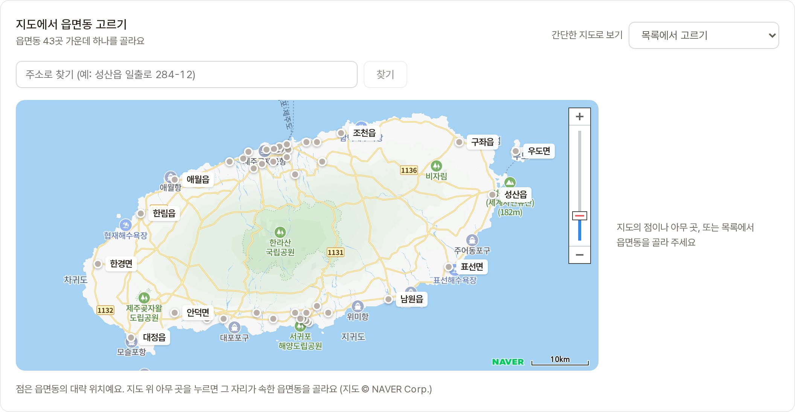
그림 2. 지도에서 읍면동 고르기. 네이버 지도의 점을 누르거나 지도 아무 곳을 누르면 그 자리의 행정동을 찾아 읍면동을 고른다.
"주소로 찾기"에 도로명·지번 주소를 넣어도 된다. 지도 키가 없으면 "간단한 지도"(내장 점 지도)로 보여 준다.
6.3 질문하기와 확인 카드
질문을 직접 쓰면 바로 계산하지 않고 "이렇게 이해했어요" 카드를 먼저 보여 준다. 장소·연령·기간·테마·가정값을 확인하고 "실행"을 누른다.
다르게 이해했으면 "고치기"로 바꾼 뒤 실행한다. 추천 질문·다음 질문·단계 단추·지도에서 고른 곳은 바로 실행한다.
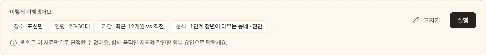
그림 3. 확인 카드. "표선면 청년 인구 왜 줄었어?"를 장소 표선면, 연령 20·30대, 기간 최근 12개월 대 직전 12개월, 1단계 분석으로 이해했다.
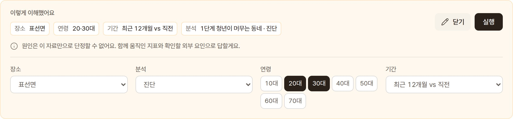
그림 4. 고치기. 장소·분석 단계·연령·기간·테마와, 3단계에서는 국내선 공급 변화율·탄력성 같은 가정값을 바꿀 수 있다. 참조표에 없는 값은 서버가 받지 않는다.
이어서 묻기: 같은 대화에서 "거기 30대만?"처럼 짧게 물으면 앞 질문의 장소·단계를 이어받는다. 답 아래의 다음 질문 단추(예: "식음료만 보기", "감편 20%면?")도 같은 대화로 이어진다.
6.4 진행 상황과 멈추기
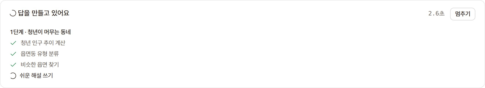
그림 5. 진행 상황. 답을 만드는 동안 단계와 도구(SQL 계산), AI 설명 쓰기를 한 줄씩 보여 준다. "멈추기"를 누르면 지금 단계를 마치고 멈춘다.
분석은 한 번에 하나씩 돌아서, 다른 사람의 분석이 끝나기를 기다리는 동안에는 그렇다고 표시한다.
6.5 답 읽는 법
답은 결론부터 보여 준다. 위에서 아래로 한 줄 결론 → 핵심 숫자 → 설명 → 제안 → 차트·지도 → 근거표와 SQL → 한계 → 검증 → 전송 미리보기 → 다음 질문 순서다.
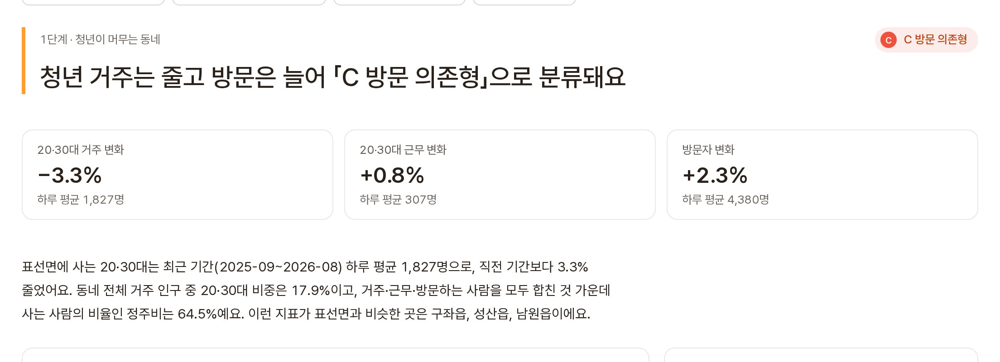
그림 6. 1단계 답. 한 줄 결론과 유형 표시(C 방문 의존형), 핵심 숫자 3개(20·30대 거주·근무 변화, 방문자 변화), Claude가 쓴 설명. 설명 속 숫자는 모두 근거표 값과 대조를 통과했다.
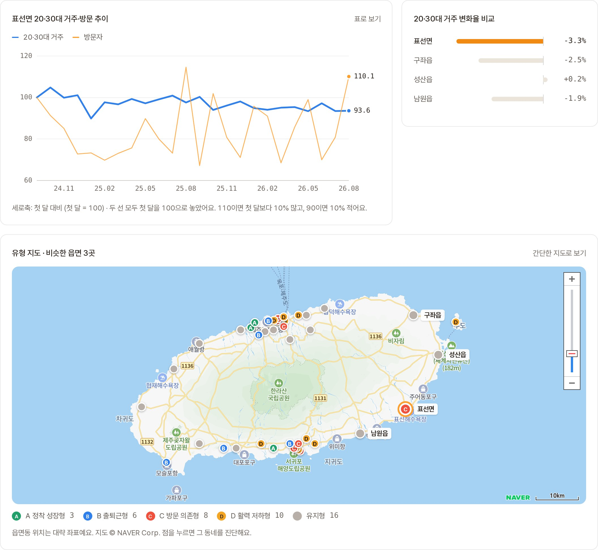
그림 7. 차트. 추이는 첫 달을 100으로 본 선 차트, 비교는 막대 목록으로 그린다.
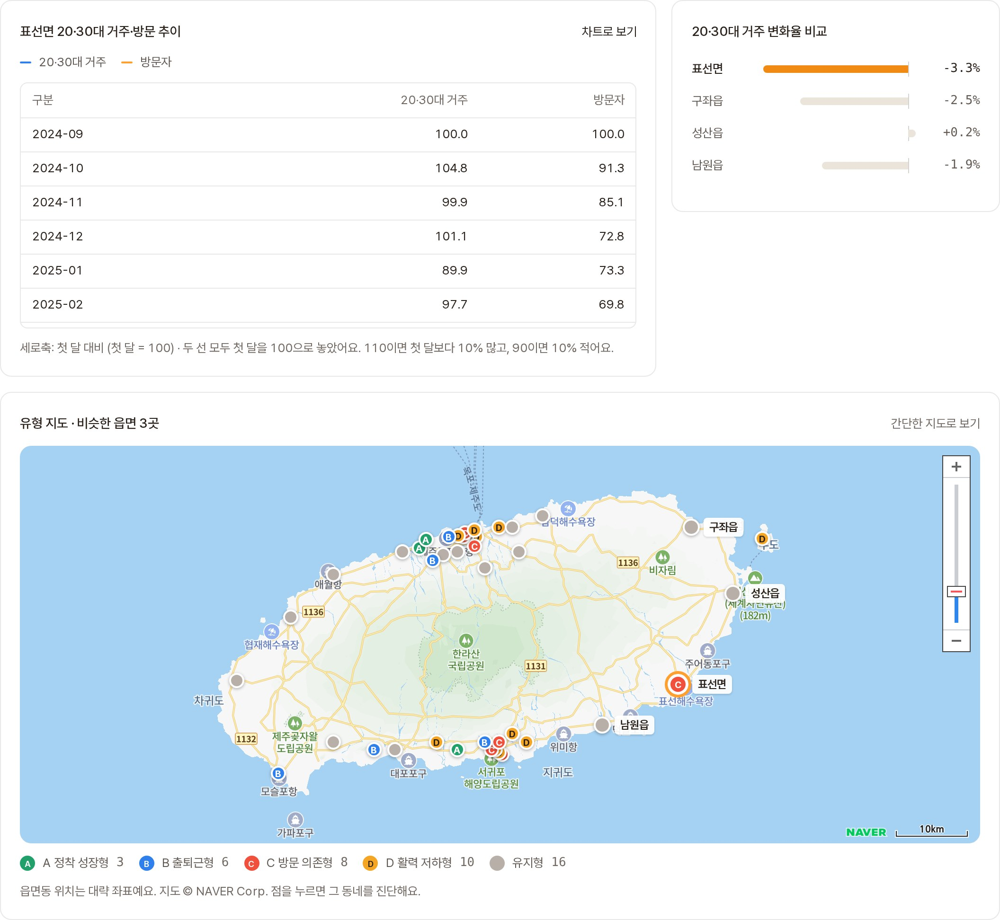
그림 8. 표로 보기. 같은 값을 표로 바꿔 볼 수 있다 (색에 기대지 않고 읽기).
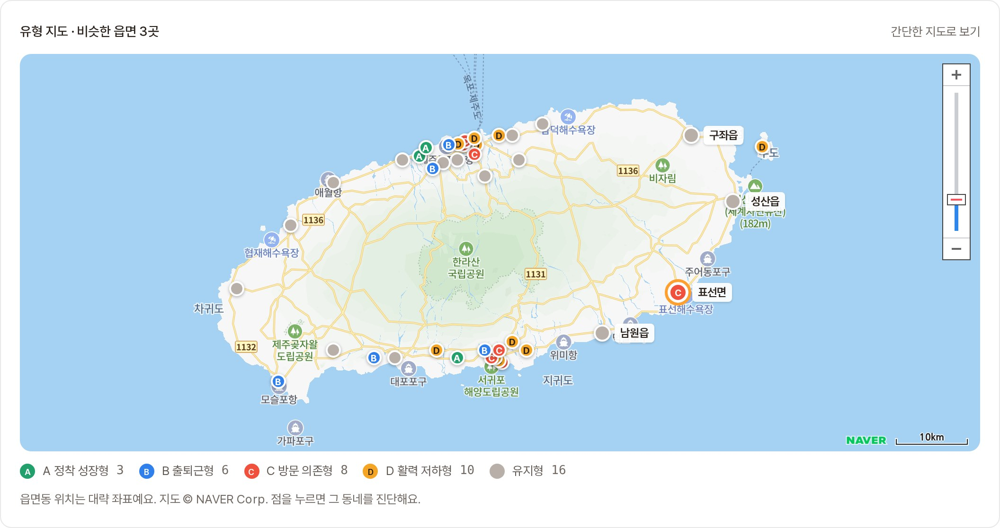
그림 9. 유형 지도. 43곳의 유형을 글자와 색으로 함께 표시하고, 지금 보는 동네와 비슷한 읍면 3곳을 강조한다. 점을 누르면 그 동네를 진단한다.
6.6 근거표와 SQL · 한계 · 검증
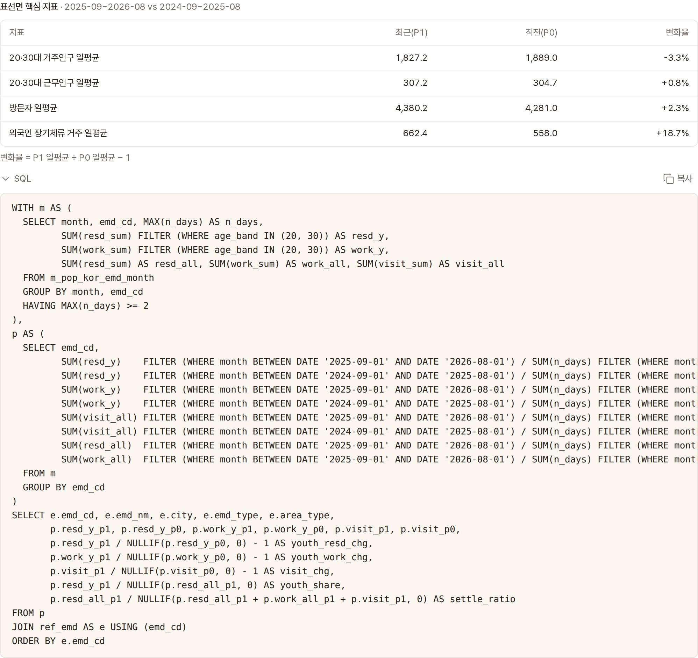
그림 10. 근거표와 SQL. 답에 쓴 모든 숫자의 근거표와 실제로 실행한 SQL을 펼쳐 볼 수 있다. 산식(변화율 = P1 일평균 ÷ P0 일평균 − 1)도 함께 적는다.
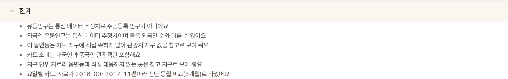
그림 11. 한계. 이 답에 쓴 자료의 한계(추정치, 공간 단위, 오래된 기간 등)를 그대로 밝힌다.
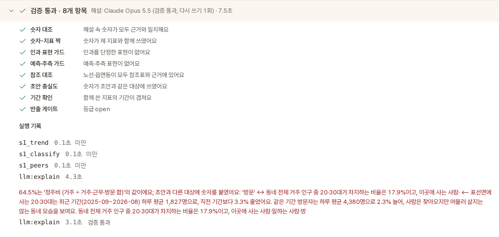
그림 12. 검증 결과와 실행 기록. 숫자 대조·인과 표현·기간 등 검증 항목과, 어떤 도구를 몇 초 돌렸는지 보여 준다.
6.7 Claude 설명: 전송 미리보기와 동의
그림 13. 전송 미리보기. Claude에 보낼 내용(질문, 규칙이 만든 한 줄 결론과 설명 초안, 집계 지표)을 그대로 보여 준다.
"이 내용을 보내는 데 동의하고 다시 실행"을 누르면 그 세션의 답부터 Claude가 설명을 다시 쓴다. 동의 전에는 기본 설명을 보여 준다.
6.8 2단계 · 3단계 화면
그림 14. 2단계. 1단계 유형으로 타깃 관광객을 정하고(표선면: 중국인 체류형 관광객), 조건을 충족한 제안 규칙을 규칙 번호와 근거 지표와 함께 보여 준다.
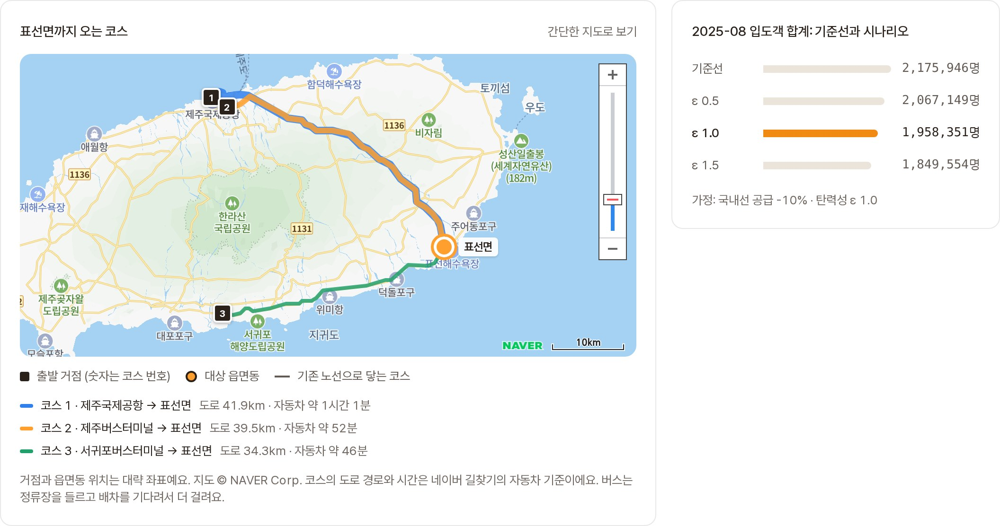
그림 15. 3단계 코스. 공항·터미널 같은 거점에서 동네까지 오는 버스 코스를 네이버 길찾기의 도로 경로로 그리고, 거리와 자동차 기준 시간을 함께 적는다.
오른쪽은 국내선 공급 −10% 가정에서 탄력성 ε 0.5·1.0·1.5별 입도객 계산이다.
6.9 처음부터 끝까지와 최종 제안서
그림 16. 세 단계가 끝나면 최종 제안서를 열거나 HTML 파일로 내려받을 수 있다.
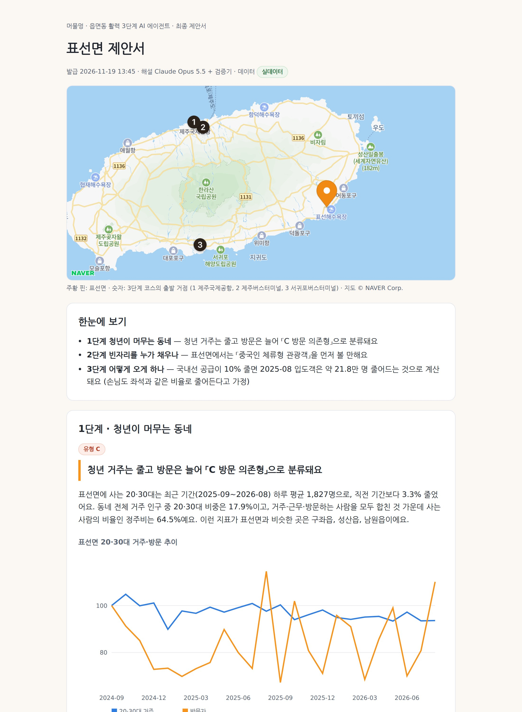
그림 17. 최종 제안서. 위치 지도, 단계별 한 줄 요약, 세 단계의 결과·근거표·SQL·한계를 한 문서로 묶는다. 자바스크립트 없이 열리고, 브라우저에서 인쇄하면 PDF로 저장된다.
6.10 데이터 정보
그림 18. 수록 기간과 출처. 왼쪽 메뉴의 "수록 기간과 출처"를 누르면 표마다 수록 기간·행 수·출처와 적재 시각을 보여 준다.
6.11 질문 예시
단계
예시 질문
1단계
성산읍 청년 인구 왜 줄었어? · 30대가 살기 좋은 읍면은? · 한 달 살이 지원은 어디에? · 애월 쪽 젊은 사람들 요즘 어때?
2단계
성산읍에 누가 올까? · 서귀포 구도심 음식점인데 외국인 손님 늘릴 수 있나? · 구좌읍 숙박 중국인 소비 변화
3단계
구좌읍까지 오는 코스는? · 국내선 10% 감편 시 12월 개별여행 입도객 · 성산읍 감편 때 버스 수요는?
이어서 묻기
거기 30대만? · 식음료만 보기 · 감편 20%면? · 탄력성 1.5로 보기
원인 질문
"왜"를 물어도 원인을 단정하지 않고, 함께 움직인 지표와 확인할 외부 요인을 정해진 문장으로 답한다
6.12 명령줄 사용
명령 (backend/에서 .venv/bin/python -m meomulmeong …)
하는 일
build-data [--mode synthetic|hub|center]
원본을 읽어 데이터 창고(PostgreSQL)를 만든다
fetch-hub --table … [--start --end --days]
제주데이터허브 Open API에서 자료를 받는다 (프로젝트 키 필요)
ask "질문" [-v] [--json]
질문 하나를 실행한다. -v는 근거표와 SQL까지 보여 준다
chain 성산읍 --report
1→2→3단계를 돌리고 최종 제안서(HTML)를 만든다
status
데이터·AI 설명 상태, 표마다 행 수와 수록 기간
serve [--open] [--prepare] [--port 8501]
웹 API와 화면을 띄운다
export-csv --mode hub
데이터 창고의 표를 CSV로 내보낸다 (이 PC에서만 쓴다)
공통 옵션 --data · --llm anthropic · --yes-cloud
데이터 모드, Claude 사용, Claude 전송 동의
제안서와 실행 기록(runs/*.jsonl: 도구·시간·LLM 시도)은 backend/outputs/(Docker는 jeju-meomulmeong_outputs 볼륨)에 남는다.
7오류 · 제약사항
7.1 자주 만나는 오류와 해결
증상
원인
해결
화면에 "서버에 연결하지 못했어요"
백엔드가 꺼져 있거나 주소가 다르다
docker compose ps · serve 실행 여부 확인. 개발 서버는 /api를 8501로 넘긴다
API가 503 warehouse_missing
PostgreSQL이 꺼져 있거나 데이터를 아직 넣지 않았다
docker compose up -d db 후 build-data. /api/health의 ready로 미리 알 수 있다
모드 전환이 409 warehouse_missing
바꾸려는 데이터 모드의 창고가 없다
build-data --mode hub 등으로 먼저 적재
답이 "자료가 없어요"로 끝남
실데이터 모드인데 그 표의 수집본이 없다
3.4절대로 받거나 내보낸 CSV를 넣고 다시 적재. 적재 보고서에 "원본 없음"으로 나온다
포트 사용 중 (3000 · 8501 · 5434)
다른 프로그램이 같은 포트를 쓴다
serve --port로 바꾸거나 compose의 포트를 고친다
Claude 대신 "기본 설명"이 나옴
전송 동의 전, 키 없음, 인증·인터넷 실패
전송 미리보기에서 동의. status의 llm_note에 이유가 나온다
"AI 설명이 검증을 통과하지 못해 기본 설명으로 대신했어요"
설명이 숫자·인과·기간 검증을 두 번 다시 써도 통과하지 못했다
의도한 동작이다. 숫자는 그대로 정확하다
네이버 지도 대신 간단한 지도
키 없음, 등록하지 않은 주소에서 열림, 인터넷 없음
3.6절. 등록한 웹 주소로 열기
수집 중 403 "Today's quota is full" · 502
허브 API의 하루 쿼터(1,000건) · 프록시 불안정
다음 날 같은 명령을 다시 실행하면 이어 받는다
모드를 바꾸는 단추가 없음 · /api/modes 403
MEOMUL_LOCK_MODES=true 배포본
.env를 고치고 다시 띄운다
답이 늦게 시작됨
분석은 한 번에 하나라 앞 사람의 분석을 기다린다
진행 목록의 대기 표시를 보고 기다리거나 멈춘다
7.2 제약사항
데이터
유동인구는 통신 데이터로 추정한 값이라 주민등록 인구가 아니다. 허브 쿼터 때문에 일 단위 자료는 달마다 며칠만 받아 하루 평균으로 계산한다.
중국인 카드 소비(허브 1048, 2018-01~2025-06)는 제주 전체 단위라 읍면동·시군구로 나눠 보지 못한다. 2단계는 제주 전체 값을 쓰고 그렇다고 밝힌다.
요일별 카드(608)와 단체/개별 소비(603)는 2016-09~2017-11 자료뿐이다. 최근 자료가 허브에 없어 그 기간을 답에 함께 적는다.
버스 노선과 경유 읍면동 참조표는 샘플이다. 노선·정류소 자료(허브 611·612)로 다시 만들어야 한다. 카드 지구와 읍면동의 연결, 읍면동 좌표는 잠정값이다.
센터 모드의 변환식(유동인구 v02, 버스 노선별 이용)은 명세서를 보고 썼고, 실제 센터 추출본으로는 아직 검증하지 않았다.
기능 · 운영
로그인 기능이 없다. 기본 설정은 이 PC 안에서만 열린다. 분석은 한 번에 하나씩 돈다.
대화 맥락(세션)은 서버 메모리에만 있어 서버를 다시 띄우면 사라진다. 데이터 모드를 바꾸면 대화가 새로 시작된다.
센터 PC용 설치 스크립트와 오프라인 설치 꾸러미는 아직 없다. 인터넷이 없는 센터 PC에서는 기본 설명(템플릿)으로만 돈다 (로컬 LLM은 쓰지 않는다).
최종 제안서는 HTML이다. PDF는 브라우저 인쇄로 만든다.
AI 설명
목록이 들어가는 답(추천 순위, 코스, 3단계 전체 계획)은 Claude 모드에서도 규칙 문장을 쓴다. 목록을 옮겨 적다 순서나 이름이 틀리는 일을 막기 위해서다.
검증기는 숫자가 없는 문장의 뜻 바뀜이나 최상급 낱말 없이 덧붙인 평가까지는 잡지 못한다.
자유 질문(준비된 분석에 맞지 않는 조회)은 Claude가 SQL을 쓰는 실험 기능이라 "SQL 검토 필요" 배지를 붙인다. Claude 호출에는 요금이 든다.
출처: 제주특별자치도, 제주데이터허브(jejudatahub.net). 본 자료는 제주빅데이터센터에서 제공하는 자료를 활용한 것이며,
연구결과는 제주특별자치도 및 제주테크노파크와 관련이 없음을 밝힙니다.
부록평가용 Claude API 키
이 부록의 평가용 키는 심사위원에게 내는 최종 결과물 ZIP의 매뉴얼에만 적는다. 공개 저장소 판에는 적지 않는다.
키가 없으면 Claude 설명 대신 기본 설명(규칙 문장)으로 돌고, 숫자·제안·검증은 같다.